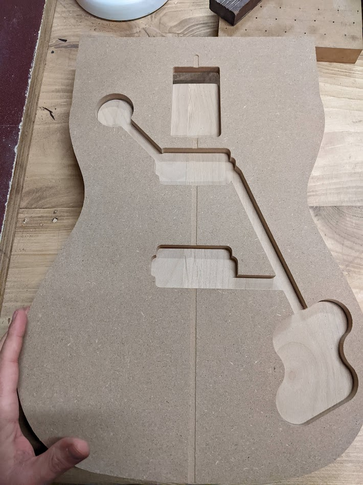
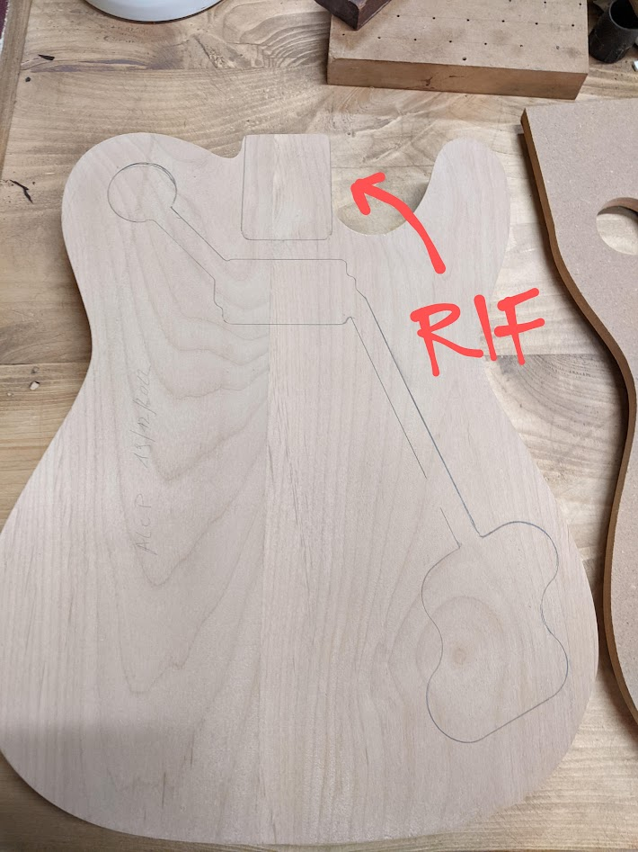
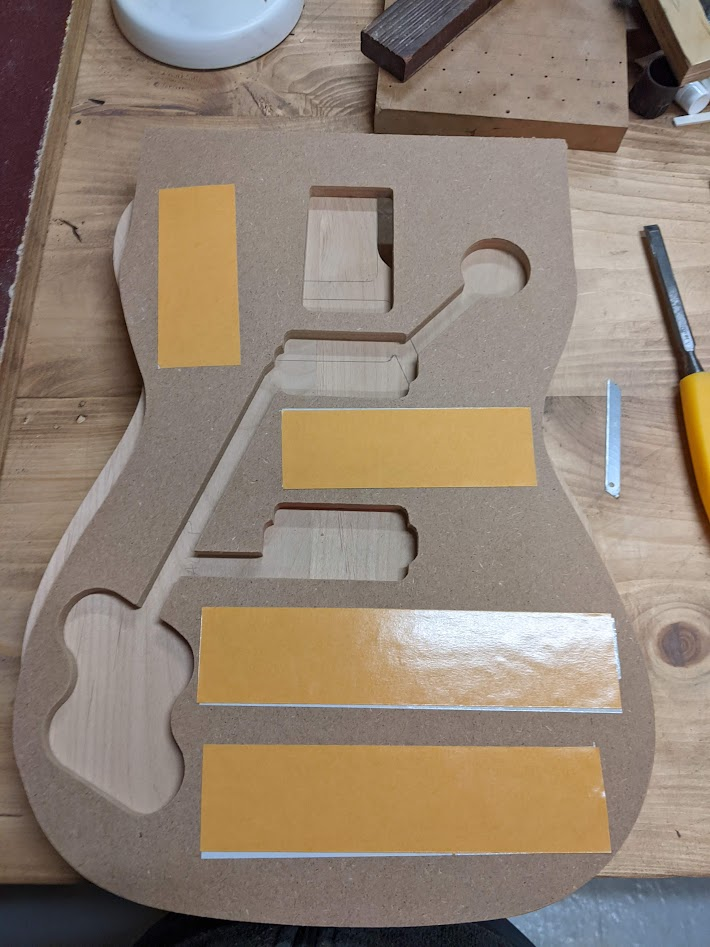
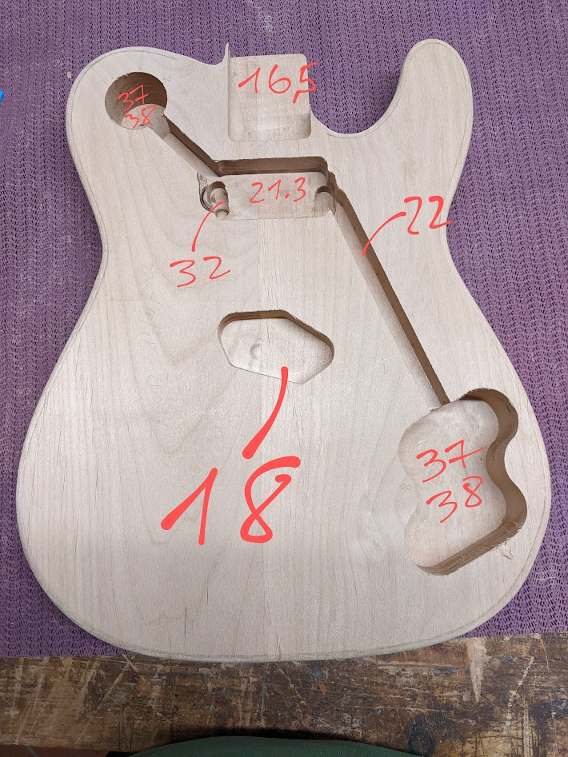
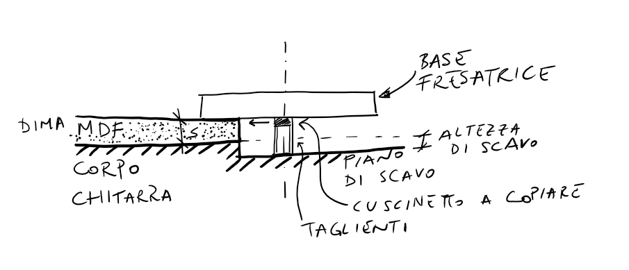
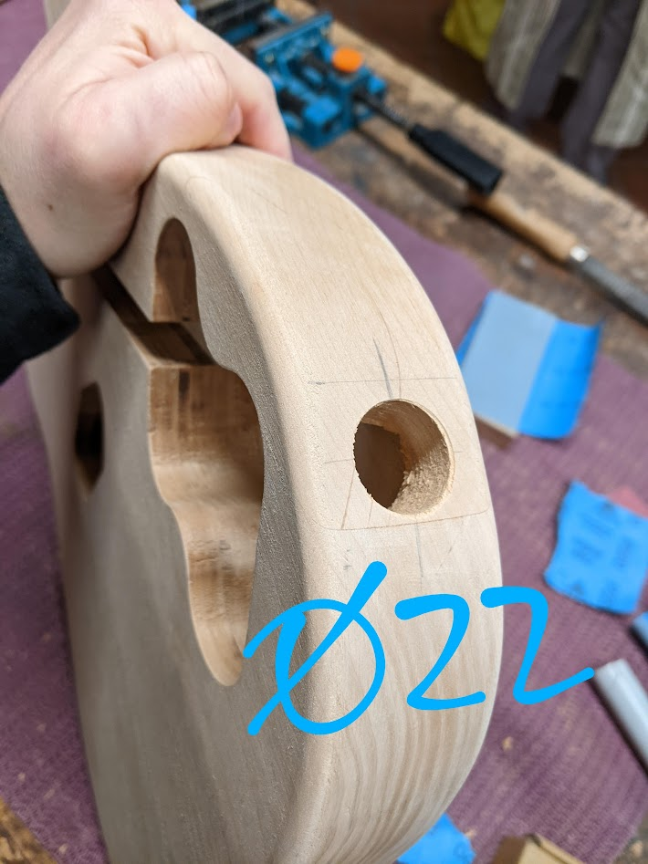
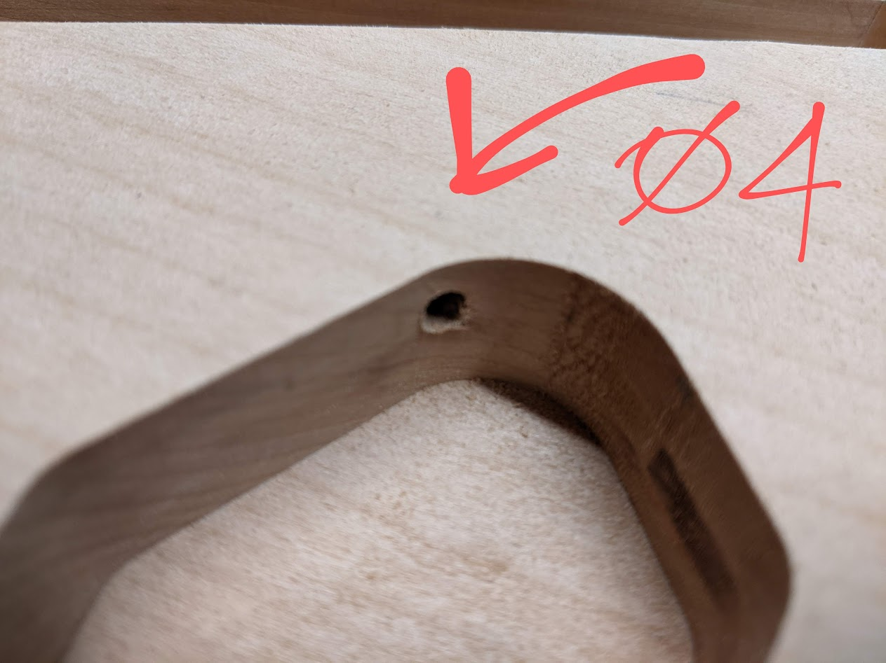
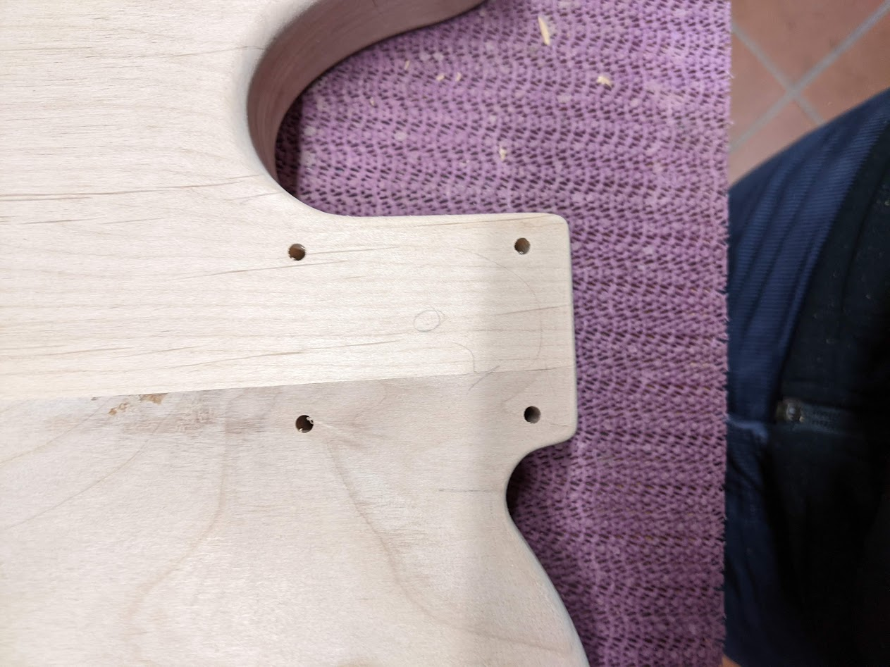
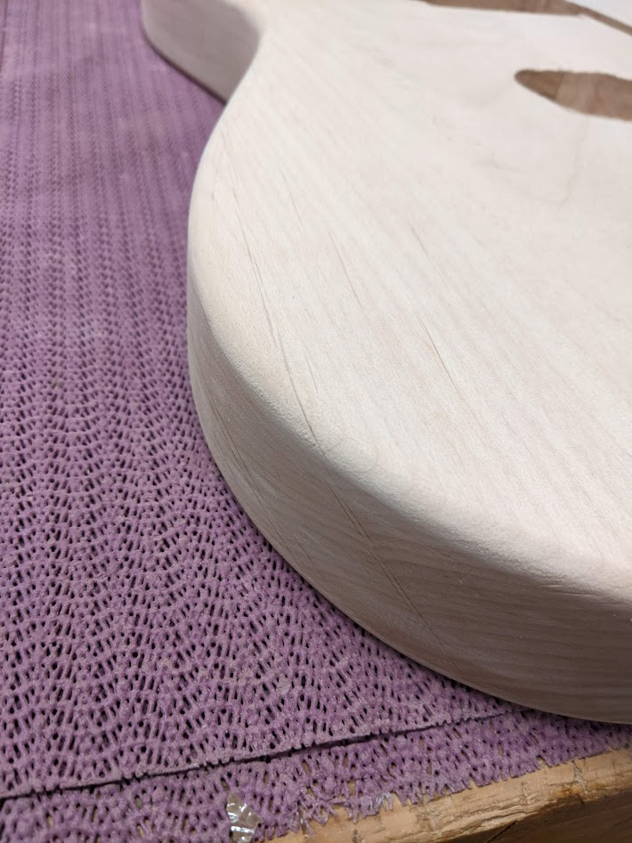
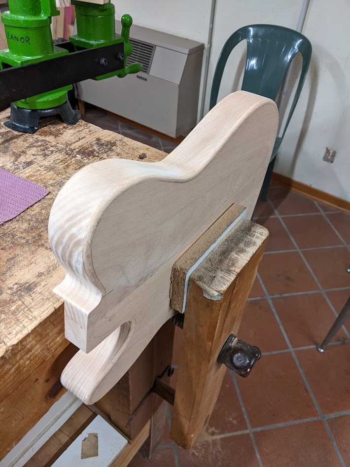

Route to hell
Finalmente un po’ di polvere fine da elettroutensile!

Nella parte III, dopo aver carteggiato all’infinito, avevamo lasciato il corpo della chitarra completamente liscio ai fianchi, con uno spigolo di 90° tra i fianchi e le facce del corpo. È bene tenere a mente però che il raccordo finale tra le facce e i fianchi del corpo non può rimanere ad angolo retto, ma bisognerà procedere ad una stondatura. Il raggio del raccordo cambia tra i modelli, ad es. la telecaster ha un raggio di 3/16’’ (circa 5 mm), mentre la stratocaster ne ha uno di 1/2’’ (circa 13 mm). Più avanti vedremo perché è utile rimandare alla fine la stondatura di raccordo tra le facce e i fianchi.
Dima per scassi precisi
Ok, ora il discorso si fa interessante.
Entra in gioco la CNC! Ebbene sì, abbiamo usato la fresatrice a controllo numerico per creare una dima ad-hoc per il modello di corpo scelto. Nonostante Marco, il maestro, abbia una quantità infinita di dime, specialmente modello telecaster, ne manca sempre qualcuna per riempire l’infinito catalogo Fender.

La dima, fatta in mdf da 8 mm, è stata realizzata per il modello Fender Vintera Deluxe che ha due humbucker “wide range” (con la placchetta in metallo). Il modello che ho scelto io (parte I) invece è una Fender Vintera Custom, che ha un humbucker al manico e un single coil classico telecaster al ponte. La dima è stata usata per tutti gli scassi, tranne uno, quello per il pickup al ponte, per il quale è stata utilizzata una dima classica telecaster, con la solita forma quasi ovale.
Posizionamento e tracciatura
Con la dima pronta e fresata, questa va centrata rispetto all’asse del corpo della chitarra. Se il corpo è costruito dall’unione di due pezzi, ci si affida alla giunzione, che fa anche da asse di riferimento. Nel mio caso, avendo usato 3 pezzi, il corretto posizionamento della dima non può fare affidamento sulla giunzione, infatti, come si vede anche dalla figura, il giunto è totalmente fuori asse di simmetria. In questo caso, quello che mi è stato suggerito di fare, è quello di allineare la dima prendendo a riferimento la proiezione della faccia nel lato lungo dello scasso del manico.

Una volta sistemata la dima al meglio, si procedere a tracciare per bene tutte le aperture sul corpo. Come si vede dalla figura il lato opposto dello scasso del manico non è allineato alla perfezione con l’impronta della dima. Questo non sembra essere un problema (o meglio, pare non esserlo, visto che nel momento in cui scrivo sono ancora a metà dell’opera, quindi chissà…), è possibile in un secondo momento rifinire per bene il contorno con carta vetrata e qualche tocco con la raspa in modo che combaci con la forma finale.
Fresatura
Ora è il momento metal (yeah! 🤘), dopo giorni di classica a far il pelo alla piccola sbavatura 🎻! Una volta posizionata la dima si procede, per mezzo di nastro biadesivo, al suo incollaggio temporaneo, cercando di stare attenti a riposizionare la dima sul body centrando le linee precedentemente tracciate.


Il taglio con la fresatrice è abbastanza semplice da realizzare, tuttavia non è il massimo della sicurezza per chi, come me, non è pratico di tagli con elettroutensili. Innanzitutto, c’è da dire che per la realizzazione di questi scassi non è strettamente necessario avere una fresatrice professionale, una da hobbista da un centinaio di euro va più che bene, l’importante è che abbia il meccanismo ad affondamento che, oltre ad avere un maggiore controllo con le due mani, da la possibilità di una regolazione di precisione lungo la verticale. Ovviamente le frese devono essere a taglienti dritti con cuscinetto a copiare. L’altezza della fresa può variare a seconda della fase in cui ci troviamo: inizialmente bisogna usare una fresa con lunghezza di taglio piccola, in modo da non sforzare troppo l’elettroutensile in affondamento; si procede a rimuovere progressivamente gli strati di materiale avanzando un po’ alla volta (~5 mm); quando si è arrivati alla massima escursione possibile dell’utensile, è necessario cambiare la fresa con una più lunga.

Non è facile stabilire a priori l’altezza di scavo massima (affondamento), perché molto dipende dagli strumenti a disposizione, in generale può valere quanto consigliato dalla Fraiser:
La regola pratica che devi ricordarti è di non superare la metà dell’altezza del tagliente oppure 2 volte il diametro della fresa. Scegli il valore più piccolo dei 2 per fresare senza brutte sorprese.
Quando l’affondamento del cuscinetto supera lo spessore \(s\) della dima, il cuscinetto continuerà a copiare la forma precedentemente fresata e, di fatto, a copiare la forma iniziale senza soluzione di continuità. A questo punto l’unico limite è la lunghezza della fresa sommata alla massima escursione della fresatrice.
Le profondità degli scassi sono misurate continuamente mano a mano che viene asportato materiale con la fresatrice. Nella figura di sopra sono riportate le profondità finali misurate con calibro digitale. Tra tutte, quella più importante è quella relativa all’alloggiamento del manico, che deve essere di 16 mm (16.5 mm è quella misurata). Anche, gli scassi dei pickup devono essere precisi, specialmente quello al ponte, che deve essere di 18 mm. Gli altri possono avere un po’ di margine in più o in meno perché sono quelli dove alloggeranno i componenti elettronici. Infine, l’humbucker al manico presenta due cavità aggiuntive che arrivano ad una profondità di scavo inferiore, nelle quali alloggeranno le viti di regolazione del pickup.
Fori
Nella mia applicazione, i fori da eseguire sul body possono essere elencati come segue:
#1 D22mm, con fresa a tazza, per l’alloggiamento del jack da 1/4’’
#1 D4mm, con una punta lunga, per l’uscita dei cavi del pickup al ponte nel canale di raccolta della cavetteria
#4 D4mm, con punta da legno classica, per l’alloggiamento delle viti del manico



Mentre i fori 1. e 2. sono stati realizzati con un classico trapano a batteria, i fori al manico devono essere molto precisi, per cui è stato utilizzato il trapano a colonna. Per realizzarli sono stati prima punzonati i punti nella faccia posteriore del body prendendo a riferimento direttamente la mascherina metallica, posizionando quest’ultima a circa 4mm dal bordo. La punzonatura è importante perché crea un invito autocentrante nel momento in cui la punta approccia il punto da forare.
Raccordo 3/16’’
Infine, l’ultima lavorazione è il raccordo tra le facce e la superficie laterale, finora lasciata a spigolo vivo. Anche questa operazione, che richiede l’utilizzo di raspa e carta abrasiva, necessita la solita maniacale attenzione perché estremamente sensibile alla minima sbavatura.


Nel caso della telecaster, il raccordo è di 5/16’’, che corrispondono a circa 5mm. Si è proceduto innanzitutto tracciando linee con offset di 5mm dallo spigolo su tutte le superfici. Con una raspa non troppo grande viene poi asportato il materiale agendo in senso circolare. In questa fase bisogna fare attenzione a non creare un piano a 45°, bensì bisogna accompagnare la curvatura e dando forma al raccordo. Gli unici spigoli da non toccare con la raspa sono quelli della zona posteriore allo scasso del manico: in questo caso si agirà solamente con carta abrasiva.
Una volta completata la sagomatura del raccordo con la raspa, si da una passata a mano con pezzetti di carta abrasiva, con la grana in progressione 120, 220, 320. Con la carta bisogna fare passate molto leggere, senza esercitare pressione: l’obbiettivo è di togliere i segni della raspa e di rendere tutto più liscio.
Con la raspa, che ormai è ufficialmente la mia nemica #1 in questa costruzione, in uno solo caso non sono stato attento e ho asportato troppo. Il risultato è che, anche dopo aver carteggiato, passando con i polpastrelli si avverte un leggero avvallamento nella traiettoria del contorno…purtroppo è così, l’anti-caster si arricchisce di imperfezioni. Vedremo se la verniciatura nasconderà o accentuerà questi errori.